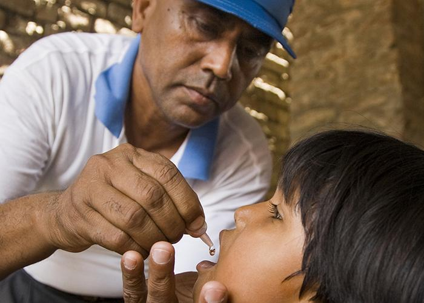
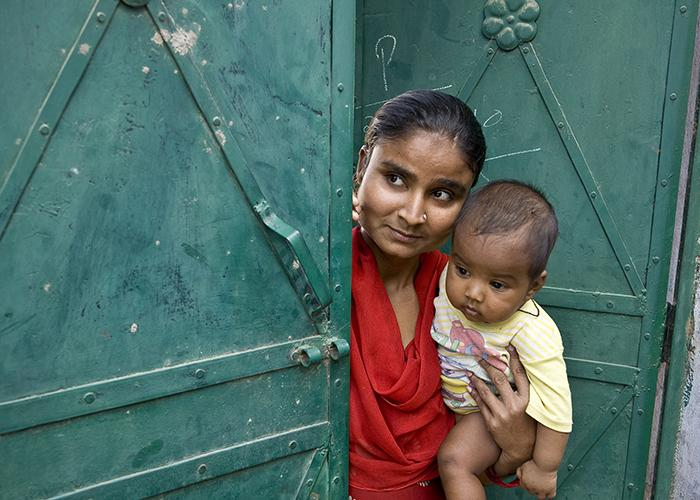

Rotary Club de Bauru
Ano rotário 2025-26 - Plano de Atividades
NOSSAS CAUSAS
Para criar vínculos internacionais, melhorar a qualidade de vida e construir um mundo mais pacífico, nós nos dedicamos a diferentes causas.
Promoção da paz
Trabalhamos para incentivar o diálogo e promover a compreensão entre os povos. Treinamos adultos e jovens com potencial de liderança para prevenirem e mediarem conflitos, e ajudarem refugiados em áreas de risco.
Combate a doenças
Educamos e capacitamos comunidades para que possam evitar o alastramento de doenças como pólio, HIV/Aids e malária. Além disso, ampliamos o acesso a assistência médica de baixo custo ou gratuita em áreas carentes.
Água limpa e saneamento

Ajudamos a levar água, saneamento e higiene a pessoas do mundo inteiro. Nosso trabalho não se limita à escavação de poços. Compartilhamos nossos conhecimentos com líderes comunitários e professores para que os resultados das nossas ações sejam duradouros.
Saúde de mães e filhos
Aproximadamente seis milhões de crianças com menos de cinco anos morrem anualmente devido a desnutrição, assistência médica de baixa qualidade e saneamento precário. Nós ampliamos o acesso a cuidados adequados para garantir a saúde e vitalidade de mães e filhos.
Apoio à educação

Mais de 775 milhões de pessoas com mais de 15 anos são analfabetas. Nós trabalhamos para ajudar as comunidades a promoverem a educação básica e alfabetização, reduzirem a disparidade de gêneros na área educacional e aumentarem a alfabetização de adultos.
Desenvolvimento econômico

Implementamos projetos que contribuem para o desenvolvimento econômico e comunitário e criamos oportunidades de trabalho decente e produtivo. Ajudamos empreendedores locais e líderes comunitários de regiões carentes, sobretudo mulheres.
Proteção do meio ambiente

Nossos associados estão lidando com questões ambientais como sempre fazem: criando projetos, usando sua rede de contatos para alterar normas e planejando para o futuro.